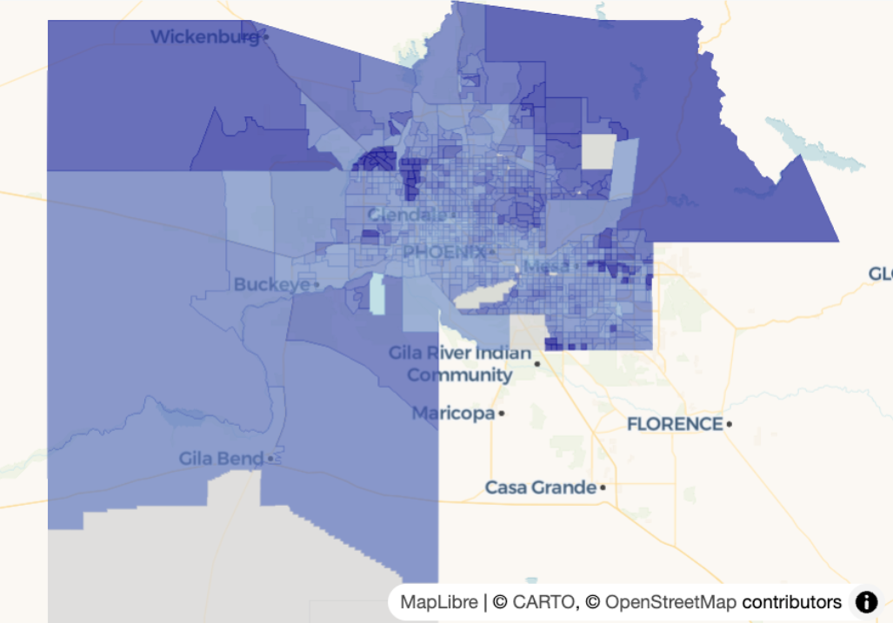
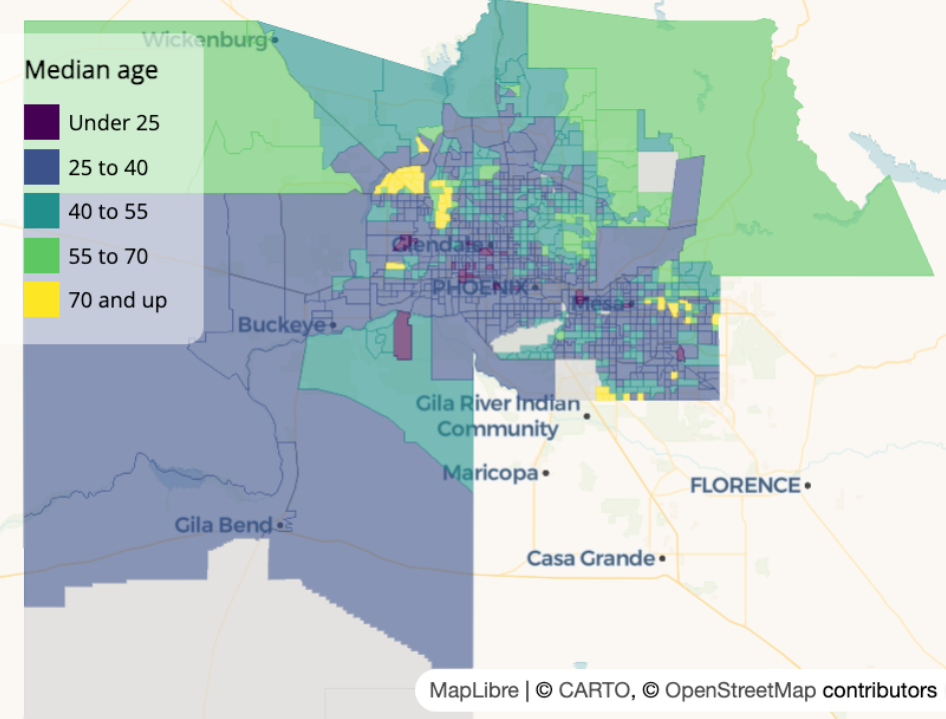
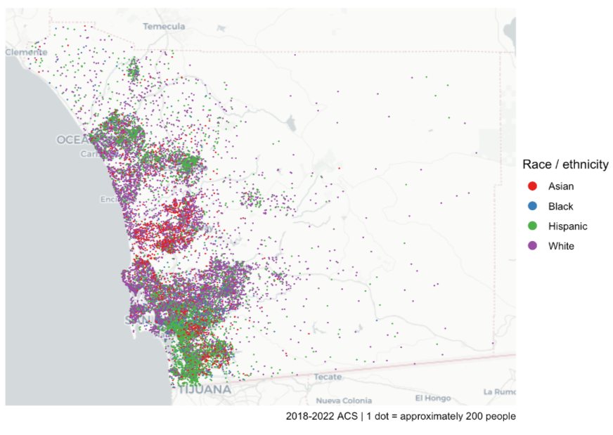
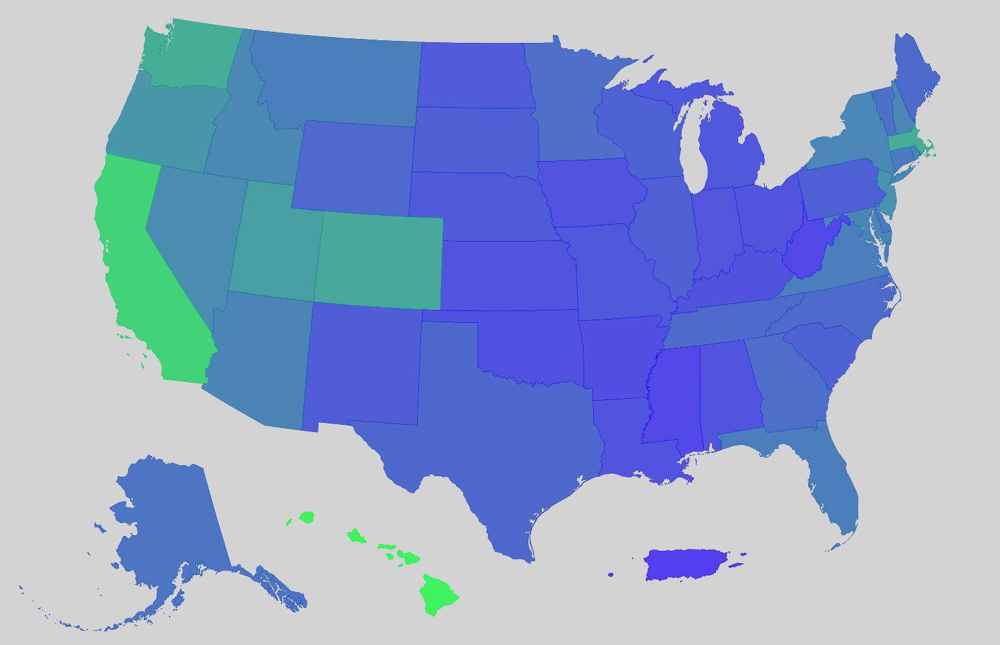

Mapping
Misc
- Packages
- {leafgl} - Performant WebGL rendering for leaflet
- {mapgl} - WebGL Maps in R with Mapbox and MapLibre
- {mapview} - Interactive Viewing of Spatial Data in R
- {tmap} - Thematic maps with an API based on grammar of graphics
- {tmap.mapgl} - A bridge between the R packages mapgl and tmap. It makes the functionality of mapgl (making the JavaScript libraries available to R) also available via the tmap user interface. (Interactivity in tmap by default uses leaflet)
- Resources
- For examples with {tmap}, see Chapter 6.3 of Analyzing US Census Data
- {rdeck} and {mapgl} are performant for visualizing large amounts of data
- Use geometry = TRUE for any of the
get_*{tidycensus} functions, and it’ll join the shapefile with the census data. Returns a SF (Simple Features) dataframe for mapping. - If you only want the shape files without the demographic data, see {tigris
- Comparisons
{mapview} along with some other packages gives you some tools for comparing maps (useful for eda or exploratory reports, etc.) (m1 and m2 are mapview objects)
m1 + m2- Creates layers that allows you click the layers button and cycle through multiple maps. So I assume you could compare more than two maps here.m1 | m2- Creates swipe map (need {leaflet.extras2}). There will be a vertical slider that you can interactively slide horizontally to gradually expose one map or the other.sync(m1, m2)- Uses {leafsync} to create side by side maps. Zooming and cursor movement are synced on both maps.
{mapgl} has
compare(m1, m2)which adds a vertical slider to compare both maps
- Zoom-Level Range: 0 (zoomed-out) to 22 (zoomed-in)
- Center of the Continental US has the coordinates:
c(-98.5795, 39.8283)- More North or South: Adjust the 39
- More East or West: Adjust the -98
- In {mapgl}, use client-side styling, query, and filter functions to get significant performance boosts.
Shapefiles
- Misc
- Packages
- {tigris} - Allows users to directly download and use TIGER/Line shapefiles
- Returns feature geometries for US Census data which default to the coordinate reference system NAD 1983 (EPSG: 4269).
- Default year of 2022, though later years are available
- Maintains consistency with the most recent 5-year American Community Survey
- {arcgislayers} - R interface to the ArcGIS REST API.
- {tigris} - Allows users to directly download and use TIGER/Line shapefiles
- Packages
- {tigris}
Census API has been having issues lately. If you can’t get the shapefiles, try installing the development version. Walker usually posts patches when this happens.
pak::pak("walkerke/tigris")Example: Block Groups from the 2023 ACS 5-Year
shap_ac5 <- tigris::block_groups( county = c("Jefferson", "Oldham", "Shelby", "Spencer", "Bullitt"), state = "KY", year = 2023 )
- TIGERweb
Example: Census Tracts for Cook County, IL and the 2023 ACS
Go TIGERweb and find survey, year, and geography
- Walker says he likes TIGERweb Generalized REST Services because of the tight boundaries around the coastlines
Choose the Appropriate Resolution

- 500K (1:500,000 scale) – Higher resolution, more detail. Suitable for regional and local analysis.
- 1 inch on a 500K map = 500,000 inches in the real world (~7.89 miles)
- 5M (1:5,000,000 scale) – Medium resolution, moderate generalization. Best for state-level mapping.
- 20M (1:20,000,000 scale) – Lower resolution, highly generalized. Good for national or large-scale mapping.
Copy URL

- After clicking the resolution link, copy the URL of the webpage it takes you to.
Pull shapefiles
library(arcgislayers) cook_geo <- arc_read("https://tigerweb.geo.census.gov/arcgis/rest/services/Generalized_ACS2023/Tracts_Blocks/MapServer/4", where = "COUNTY = '031' AND STATE = '17'") head(cook_geo) #> Simple feature collection with 1331 features and 17 fields #> Geometry type: POLYGON #> Dimension: XY #> Bounding box: xmin: -9825464 ymin: 5081873 xmax: -9743145 ymax: 5184116 #> Projected CRS: WGS 84 / Pseudo-Mercator #> First 10 features: #> MTFCC OID GEOID STATE COUNTY TRACT BASENAME #> 1 G5020 207903704492010 17031030101 17 031 030101 301.01 #> 2 G5020 207903704492021 17031030701 17 031 030701 307.01 #> 3 G5020 207903704492051 17031070103 17 031 070103 701.03 #> 4 G5020 20790197959947 17031807100 17 031 807100 8071 #> 5 G5020 20790197959946 17031807200 17 031 807200 8072Paste URL and enter COUNTY and STATE FIPS code components
If you look in the tidycensus data, the state and county FIPS components will be the first five digits of the GEOID column
For a group of geographies (e.g. counties):
where = "STATE = '36' AND COUNTY IN ('005', '047', '061', '081', '085')"
Join with tidycensus Data
cook_education_geo <- cook_geo %>% select(GEOID) %>% left_join(cook_education, by = "GEOID")- Only the GEOID column is kept, but since this is a sf class dataset, I think the geometry comes along automatically.
{kind=link}
Preprocessing
Remove water from geographies
Before 
After nyc_income_tiger <- get_acs( geography = "tract", variables = "B19013_001", state = "NY", county = c("New York", "Kings", "Queens", "Bronx", "Richmond"), year = 2022, cb = FALSE, geometry = TRUE ) library(tigris) library(sf) sf_use_s2(FALSE) nyc_erase <- erase_water( nyc_income_tiger, area_threshold = 0.5, year = 2022 ) mapview(nyc_erase, zcol = "estimate")- Figures
- At the center-bottom, you can see how a sharp point is exposed where it was squared off before
- At the top-left, the point along the border which are piers/docks are now exposed.
- At the upper-middle, extraneous boundary lines have been removed and islands in the waterway are more clearly visible.
- Works only with regular tigris shapefiles from the US census bureau — so not OpenStreetMaps, etc. For other shapefiles, you’d need to do the manual overlay, see Chapter 7.1 in Analyzing US Census Data for details.
- Can take a couple minutes to run
- cb = FALSE says get the regular tigris line files which avoid sliver polygons which are caused by slight misalignment of layers (?)
- area_threshold = 0.5 says that water areas below the 50th percentile in terms of size are removed. Probably a value you’ll have to play around with.
- Figures
{kind=link}
Workflows
Example: Automate Making 100 Maps
Show the geographic patterns in remote work for the 100 largest counties by population in US
pacman::p_load( tidyverse, mapview, tidycensus ) top100counties <- get_acs( geography = "county", variables = "B01003_001", # total county population year = 2022, survey = "acs1" ) |> slice_max(estimate, n = 100)- MOE is NA means this is true value
- Using ACS 1-Year because we want the most recent data
wfh_tract_list <- top100counties %>% split(~NAME) |> # splits tibble into a list by county map(function(county) { # extract first 2 chars (state) state_fips <- str_sub(string = county$GEOID, start = 1, end = 2) # extract next 3 chars (county) county_fips <- str_sub(string = county$GEOID, start = 3, end = 5) get_acs( geography = "tract", variables = "DP03_0024P", # remote work state = state_fips, county = county_fips, year = 2022, geometry = TRUE ) })- tidycensus also a
fips_codesdataset - This hits the API a 100 times.

Denver wfh_maps <- map(wfh_tract_list, function(county) { mapview( county, zcol = "estimate", layer.name = "% working from home" ) })
Choropleths
Best for continuous data like rates and percentages, but you can use for discrete variables
- You can create a discrete color palette with the at argument in the
mapviewfunction.Example
# check min and max of your data to select range of bins min(iowa_over_65, na.rm = TRUE) # 0 max(iowa_over_65, na.rm = TRUE) # 38.4 m1 <- mapview( iowa_over_65, zcol = "value", layer.name = "% age 65 and up<br>Census tracts in Iowa", col.regions = inferno(100, direction = -1), at = c(0, 10, 20, 30, 40) )- This will result in a discrete palette with bins of 0-10, 10-20, etc. Looks like an overlap, so I’m sure which bin contains the endpoints.
- You can create a discrete color palette with the at argument in the
Issues
Notes from Data Visualization: A practical introduction, Ch.7 (Healy)
Administrative areas vary widely in geographical area and they also vary widely in population size, so most choropleth maps of the U.S. for whatever variable in effect show population density more than anything else.
The states of New Hampshire, Rhode Island, Massachussetts, and Connecticut are all smaller in area than any of the ten largest Western counties. Many of those counties have fewer than a hundred thousand people living in them. Some have fewer than ten thousand inhabitants.
Much county- state- and national data is not properly spatial, insofar as it is really about individuals (or some other unit of interest) rather than the geographical distribution of those units per se.
Beware of using per capita standardization when the event of interest is not very common, and there is very wide variation in the base size of the units, then the denominator (e.g., the population size) starts to be expressed more and more in the standardized measure.
If there are fewer than ten events per year for a cause of death, the Centers for Disease Control (CDC) will not report them at the county level because it might be possible to identify particular deceased individuals. The count will be coded as “suppressed†and therefore any rates calculated will be unreliable.
e.g. 12 deaths in a small population might well put a sparsely-populated county in the highest (darkest) category of suicide rate. Meanwhile, a low-population counties just under that threshold would be coded as being in the lowest (lightest) bin.
If estimates for these counties cannot be obtained directly or estimated with a good model, then it is better to drop those cases as missing
Example: {mapview} Over 65 in Iowa by census tract

library(mapviw); library(viridisLite) iowa_over_65 <- get_decennial( geography = "tract", variables = "DP1_0024P", state = "IA", geometry = TRUE, sumfile = "dp", year = 2020 ) m1 <- mapview( iowa_over_65, zcol = "value", layer.name = "% age 65 and up<br>Census tracts in Iowa", col.regions = inferno(100, direction = -1)){mapview} is interactive and great for exploration of data
Export as an HTML file
htmlwidgets::saveWidget(m1@map, "iowa_over_65.html")- Can embed it elsewhere (html report or website) by adding it as an asset
- For {mapgl}, you just use the name of the object and don’t need the
@syntax
Example: {ggplot}
texas_income_sf <- get_acs( geography = "county", variables = "B19013_001", state = "TX", year = 2022, geometry = TRUE ) plot(texas_income_sf['estimate'])Example: {mapgl} Continuous Choropleth
maricopa_age <- get_acs( geography = "tract", variables = "B01002_001", state = "AZ", county = "Maricopa", geometry = TRUE, year = 2023 ) summary(maricopa_age$estimate) #> Min. 1st Qu. Median Mean 3rd Qu. Max. NA's #> 4.00 31.80 36.70 39.26 42.80 76.80 14 maplibre(bounds = maricopa_age) |> add_fill_layer( id = "age", source = maricopa_age, fill_color = interpolate( column = "estimate", # median age per county values = c(4, 77), stops = c("lightblue", "darkblue"), na_color = "lightgrey" ), fill_opacity = 0.7 )interpolateused for continuous choropleth maps- id = “age†is just a name you’re giving the layer.
- values supplies a range of values to interpolate between. In this case, it’s the floor and ceiling of the min and max of the estimate column
- stops are the end points of your color gradient
Example: {mapgl} Classed Choropleth
library(viridisLite) colors <- viridis(5) maplibre( bounds = maricopa_age ) |> add_fill_layer( id = "maricopa", source = maricopa_age, fill_color = step_expr( column = "estimate", base = colors[1], stops = colors[2:5], values = c(25, 40, 55, 70), na_color = "lightgrey" ), fill_opacity = 0.6 ) |> add_legend( "Median age", values = c( "Under 25", "25 to 40", "40 to 55", "55 to 70", "70 and up" ), colors = colors, type = "categorical" ) |> fill_opacity = 0.6, tooltip = "estimate", hover_options = list( fill_opacity = 1, fill_color = "red" )- “id = maricopa†is just a name you decided to give this layer
step_expris used for discrete valuesvaluesare the left-side values of your bins, I think (e.g. 0-24, 25-39, etc.)- Basing this on his language “under 25†which I wouldn’t think includes 25. Similarly with “70 and up†which should include the left side value. Nothing in the docs that clarifies this.
baseis the color of the values in the first bin- stops are the colors for the rest of the bins
{kind=link}
{kind=link}
Circle Maps
“Graduated Symbol†maps are better for count data. Even though using a choropleth is not as bad at the census tract level since all tracts have around 4000 people, the sizes of the tracts can be substantially different which can influence the interpretation. Using circles or bubbles, etc. focuses the user on the size of the symbol and less on the size of the geography polygons.
Example: Hispanic Counts in San Diego County at the Census Tract Level

san_diego_race_counts <- get_acs( geography = "tract", variables = c( Hispanic = "DP05_0073", White = "DP05_0079", Black = "DP05_0080", Asian = "DP05_0082" ), state = "CA", county = "San Diego", geometry = TRUE, year = 2022 ) san_diego_hispanic <- filter( san_diego_race_counts, variable == "Hispanic" ) centroids <- st_centroid(san_diego_hispanic)st_centroidfinds the center point of geography polygons which will be the location of the symbols. If you look at the geometry column it will say POINT, which only has a latitude and longitude, instead of POLYGON, which as multiple coordiates.
ggplot() + geom_sf( data = san_diego_hispanic, color = "black", fill = "lightgrey") + geom_sf( data = centroids, aes(size = estimate), alpha = 0.7, color = "navy") + theme_void() + labs( title = "Hispanic population by Census tract", subtitle = "2018-2022 ACS, San Diego County, California", size = "ACS estimate") + scale_size_area(max_size = 6)scale_size_areascales the size of the circle according to the count value.- max_size is the maximum diameter of the circle which you’ll want to adjust to be large enough so that you can differentiate the circles but small enough so you have the least amount of overlap between circles in neighboring geographies (although this is probably inevitable).
Example: {mapgl}
maplibre( style = carto_style("positron"), bounds = centroids # guess centroid obj still has bound box attr ) |> add_circle_layer( id = "circles", source = centroids, circle_radius = step_expr( column = "estimate", values = c(500, 1000, 1500, 2500), base = 2, stops = c(4, 6, 8, 10), ), circle_opacity = 0.6, circle_color = "navy", tooltip = "estimate" ) |> add_legend( "Hispanic population", values = c( "Under 500", "500-1000", "1000-1500", "1500-2500", "2500 and up" ), sizes = c(2, 4, 6, 8, 10), colors = "navy", type = "categorical", circular_patches = TRUE, position = "top-right" )- “id = circles†is just a name you decided to give this layer
step_expris used for discrete (ordered) valuesvaluesare the left-side values of your bins, I think (e.g. 0-499, 500-999, etc.)- Basing this on his language “under 500†which I wouldn’t think includes 500. Similarly with 500 and up which also should include the left-side. Nothing in the docs that clarifies this.
baseis the circle size of the values in the first bin- stops are the circle size for the rest of the bins
- circular_patches = TRUE add the filled circles to the legend
Dot Density
Useful to show heterogeneity and mixing between groups versus plotting group facet maps.
Example: Population by Race in San Diego County
san_diego_race_dots <- tidycensus::as_dot_density( san_diego_race_counts, # see circle maps example for code value = "estimate", # group population values_per_dot = 200, group = "variable" # races ) dot_density_map <- ggplot() + annotation_map_tile(type = "cartolight", zoom = 9) + geom_sf( data = san_diego_race_dots, aes(color = variable), size = 0.01) + scale_color_brewer(palette = "Set1") + guides(color = guide_legend(override.aes = list(size = 3))) + theme_void() + labs( color = "Race / ethnicity", caption = "2018-2022 ACS | 1 dot = approximately 200 people")as_dot_densityscatters the dots randomly within a geography. values_per_dotsays each dot is 200 units (e.g. people or households). Without shuffling, ggplot will layer each group’s dots on top of each other.annotation_map_tilefrom {ggspatial} applies a base map layer as a reference for the user. Base maps have land marks and popular features labeled in the geography and surrounding areas to help the user identify the area being shown.- Dots are randomly placed within the geography (so you could end up with dots in water)
Example: {mapgl}
library(RColorBrewer) groups <- unique(san_diego_race_dots$variable) colors <- brewer.pal(length(groups), "Set1") maplibre( style = carto_style("positron"), bounds = san_diego_race_dots ) |> add_circle_layer( id = "dots", source = san_diego_race_dots, circle_color = match_expr( column = "variable", # race category values = groups, stops = colors ), circle_radius = interpolate( property = "zoom", values = c(9, 14), stops = c(1, 10) ), before_id = "watername_ocean" ) |> add_legend( "Race/ethnicity in San Diego<br>1 dot = 200 people", values = groups, colors = colors, circular_patches = TRUE, type = "categorical" )- Map is the same as the ggplot one above
match_expris for categorical values. It matches categories to colorsinterpolateis used in this instance to dynamically change the size of the dot according the current zoom-level on the map.- The closer the user zooms into an area, the larger the dots become. Just a feature to make the visualization easier to interpret.
- Guessing values is the range of zoom levels and stops is the range of dot sizes
- circular_patches = TRUE add the colored dots to the legend
{kind=link}
Circle Clustering
Notes from Circle clusters and heatmaps for dense point data in R
Points within a given radius of one another are packed into clusters, and those clusters are visualized instead of the individual circles.
- Clusters will dynamically change depending on the user’s zoom level, revealing individual points when a max zoom level is reached.
Example: Public intoxication violations in Fort Worth, Texas

Zoom-In Zoom-Out library(mapgl) library(tidyverse) library(sf) library(tigris) options(tigris_use_cache = TRUE) intox <- read_csv("https://raw.githubusercontent.com/walkerke/geog30323/refs/heads/master/intoxication.csv") |> na.omit() |> st_as_sf(coords = c("longitude", "latitude"), crs = 4326) |> st_jitter(factor = 0.0001) ft_worth <- places(cb = TRUE, year = 2023) |> filter(NAME == "Fort Worth") maplibre( style = maptiler_style("openstreetmap"), bounds = ft_worth ) |> add_fill_layer( id = "city", source = ft_worth, fill_color = "navy", fill_opacity = 0.2 ) |> add_circle_layer( id = "circles", source = intox, circle_color = "red", circle_stroke_color = "white", circle_stroke_width = 1, cluster_options = cluster_options() )In
cluster_options, you can specify a smaller cluster radius (specified in pixels) within which circles will be included in a clustercluster_options = cluster_options( cluster_radius = 30, color_stops = c("#377eb8", "#4daf4a", "#984ea3"), count_stops = c(0, 200, 500) )- You can also specify styling properties like the stroke width, blur, etc.
{kind=link}
Heatmaps
Notes from Circle clusters and heatmaps for dense point data in R
Example 1: Public intoxication violations in Fort Worth, Texas
Zoom-In 
Zoom-Out library(mapgl) library(tidyverse) library(sf) library(tigris) options(tigris_use_cache = TRUE) intox <- read_csv("https://raw.githubusercontent.com/walkerke/geog30323/refs/heads/master/intoxication.csv") |> na.omit() |> st_as_sf(coords = c("longitude", "latitude"), crs = 4326) |> st_jitter(factor = 0.0001) ft_worth <- places(cb = TRUE, year = 2023) |> filter(NAME == "Fort Worth") maplibre( style = maptiler_style("openstreetmap"), bounds = ft_worth ) |> add_fill_layer( id = "city", source = ft_worth, fill_color = "navy", fill_opacity = 0.2 ) |> add_heatmap_layer( id = "heatmap", source = intox, heatmap_radius = 10, heatmap_color = interpolate( property = "heatmap-density", values = seq(0, 1, 0.2), stops = c("transparent", viridisLite::viridis(5)) ) )- The radius of influence get decreased to 10 from the default of 30 pixels which “breaks apart†the large blob when zoomed out.
- Density
valuesrange from 0 to 1 - Locations with values of 0 to transparent, and all other values are represented by the viridis color palette.
Example 2: With individual dots and pop-ups
Maximum Zoom-In 
Zoom-In library(glue) intox <- intox %>% mutate(popup_content = glue(' <div style="font-family: \'Open Sans\', sans-serif; max-width: 300px; padding: 10px; background-color: #f8f9fa; border-radius: 5px; box-shadow: 0 2px 5px rgba(0,0,0,0.1);"> <h3 style="color: #007bff; margin-top: 0;">Incident Details</h3> <p> <strong>Date:</strong> <span style="color: #495057;">{`Reported Date`}</span><br> <strong>Address:</strong> <span style="color: #495057;">{`Block Address`}</span><br> <strong>Location:</strong> <span style="color: #495057;">{`Location Description`}</span> </p> </div> ')) maplibre( style = maptiler_style("openstreetmap"), bounds = ft_worth ) |> add_fill_layer( id = "city", source = ft_worth, fill_color = "navy", fill_opacity = 0.2 ) |> add_heatmap_layer( id = "heatmap", source = intox, heatmap_radius = 10, heatmap_color = interpolate( property = "heatmap-density", values = seq(0, 1, 0.2), stops = c("transparent", viridisLite::viridis(5)) ), heatmap_opacity = interpolate( property = "zoom", values = c(11, 14), stops = c(1, 0) ) ) |> add_circle_layer( id = "circles", source = intox, circle_color = "red", circle_stroke_color = "white", circle_stroke_width = 1, min_zoom = 12.5, popup = "popup_content" )- Data from previous example
{kind=link}
{kind=link}
National Mapping
Issues arise from trying to include Alaska, Hawaii, Puerto Rico, etc.
Example: {mapgl} Median Home Value by State
us_value <- get_acs( geography = "state", variables = "B25077_001", year = 2023, survey = "acs1", geometry = TRUE, resolution = "5m" ) r <- range(us_value$estimate, na.rm = TRUE)- resolution = “5m†says one inch on the map equals five million inches in the real world. Good for state-level mapping.
- See tidycensus >> Misc >> Workaround >> Example for details on resolution
rangegets the min and max values to calculate the color gradient ininterpolate
# shift non-contiguous regions into CONUS window us_value_shifted <- tigris::shift_geometry(us_value) us_value_shifted$tooltip <- paste0(us_value_shifted$NAME, ": $", us_value_shifted$estimate)- Moves Alaska, Hawaii, and Puerto Rico just below CONUS
shift_geometryonly works for the US and it doesn’t work for Guam, American Samoa, and Virgin Islands.
# blank basemap style <- list( version = 8, sources = structure(list(), .Names = character(0)), layers = list( list( id = "background", type = "background", paint = list( `background-color` = "lightgrey" ) ) ) ) maplibre( style = style, center = c(-98.8, 37.68), # pretty much the center of the US but lower zoom = 2.5 ) |> set_projection("globe") |> add_fill_layer( id = "value", source = us_value_shifted, fill_color = interpolate( column = "estimate", values = r, stops = c("#1D00FC", "#00FF2F") ), fill_opacity = 0.7, tooltip = "tooltip" )- The blank basemap is created so Alaska and Hawaii aren’t shown in the middle of Mexico.
- resolution = “5m†says one inch on the map equals five million inches in the real world. Good for state-level mapping.
Example: {mapgl} All the Census Tracts and Fixing Holes

Zoom-Out Zoom-In library(tidycensus) options(tigris_use_cache = TRUE) # tract level us_income <- get_acs( geography = "tract", variables = "B19013_001", # median income state = c(state.abb, "DC", "PR"), year = 2023, geometry = TRUE, resolution = "5m" ) # county-level us_county_income <- get_acs( geography = "county", variables = "B19013_001", year = 2023, geometry = TRUE, resolution = "5m" )- For a deeper dive, Walker wrote a blog post about it.
- It can take a few minutes to download all the US census tracts (85K+). I think it has to hit the API multiple times — maybe once per state.
maplibre( style = carto_style("positron"), center = c(-98.5795, 39.8283), # center of CONUS zoom = 3 ) |> set_projection("globe") |> add_source( id = "us-tracts", data = us_income, tolerance = 0 ) |> add_fill_layer( id = "fill-layer", source = "us-tracts", fill_color = interpolate( column = "estimate", values = c(10000, 72000, 250000), stops = c("#edf8b1", "#7fcdbb", "#2c7fb8"), na_color = "lightgrey" ), fill_opacity = 0.7, tooltip = "estimate" )- Since there’s so much data, maplibre will remove data when you’re zoomed out and add it back in when you zoom in for best performance. The problem is that it looks like you holes in your map.
- i.e. when zoomed out tracts in big cities will appear gray (or whatever your NA color is).
- Uses the Douglas-Peucker simplification algorithm
- Default tolerance is 0.375 = ~5.6km at zoom level 3 (i.e. shapes with diameters less than 5.6km have their information (color)
- (Not a good solution) Adjust this tolerance by using
add_sourceto access tolerance, and instead of using your dataset for source inadd_fill_layer, you use the value of id inadd_source.
maplibre( style = carto_style("positron"), center = c(-98.5795, 39.8283), # center of CONUS zoom = 3 ) |> set_projection("globe") |> add_fill_layer( # tract data id = "fill-layer", source = us_income, fill_color = interpolate( column = "estimate", values = c(10000, 65000, 250000), stops = c("#edf8b1", "#7fcdbb", "#2c7fb8"), na_color = "lightgrey" ), fill_opacity = 0.7, min_zoom = 8, # only when zoomed-in tooltip = "estimate" ) |> add_fill_layer( # county data id = "county-fill-layer", source = us_county_income, fill_color = interpolate( column = "estimate", type = "linear", values = c(10000, 65000, 250000), stops = c("#edf8b1", "#7fcdbb", "#2c7fb8"), na_color = "lightgrey" ), fill_opacity = 0.7, max_zoom = 7.99, # only when zoomed-out tooltip = "estimate" ) |> add_continuous_legend( "Median household income", values = c("$10k", "$65k", "$250k"), colors = c("#edf8b1", "#7fcdbb", "#2c7fb8") )- When zoomed-out, use the county-level data, and when zoomed-in, use the tract-level data. Visualizing around 3,000 counties instead of around 85,000 tracts leads to much better performance when zoomed-out, but it also allows you to keep the tract-level data.
- Counties: max_zoom = 7.99
- Tracts: min_zoom = 8
{kind=link}
{kind=link}